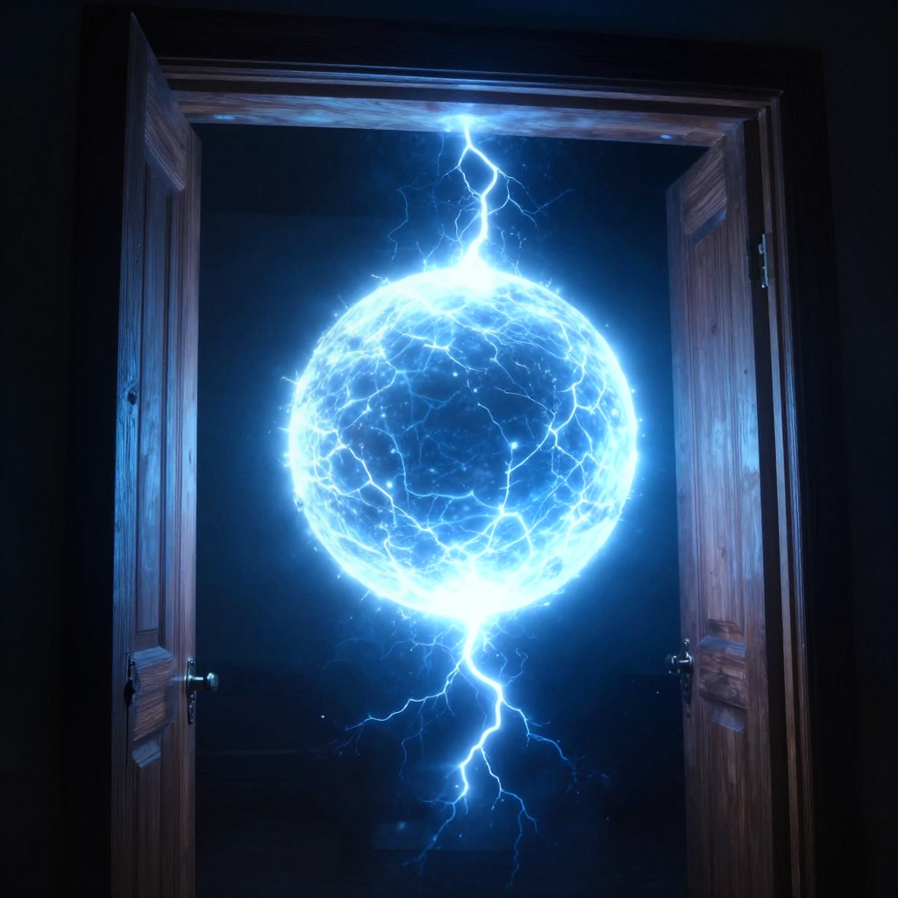
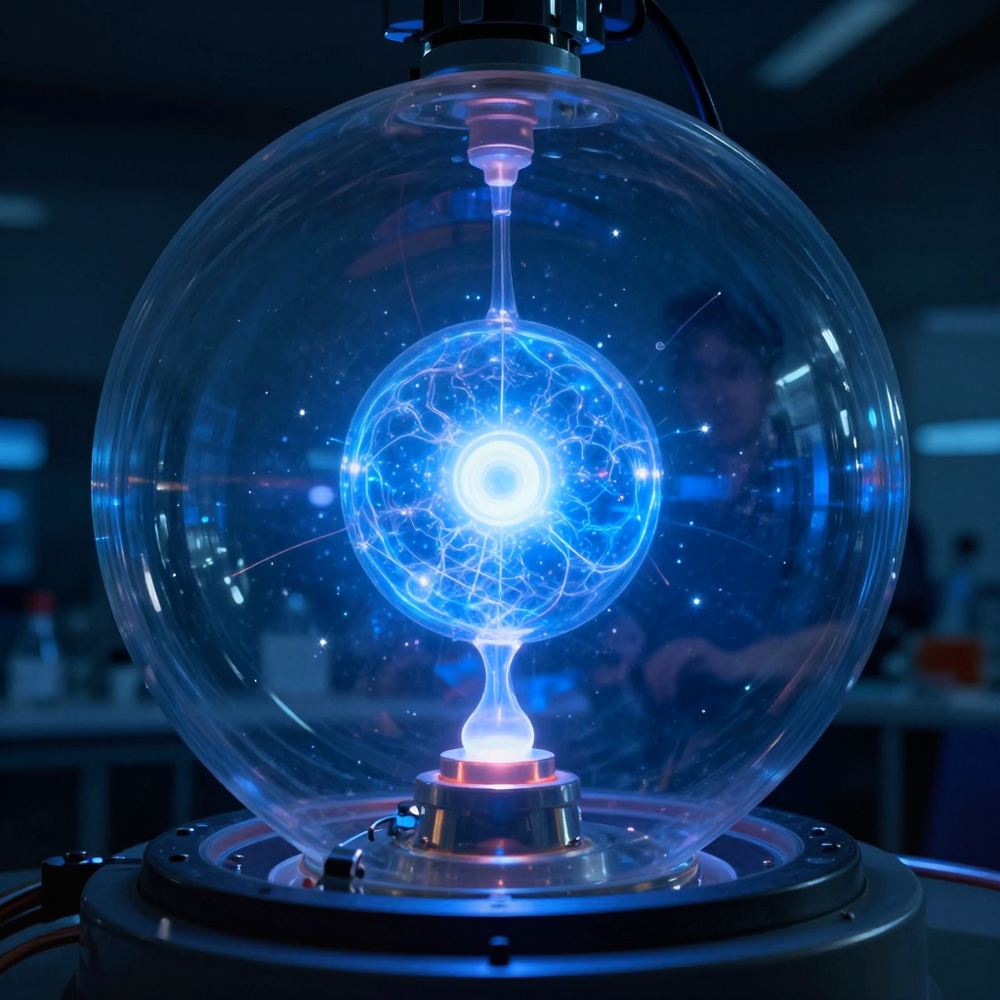

Ball Lightning: The Ghost Orbs of Storms

A mysterious glowing orb of electricity floating through the air during a storm.
Imagine looking out your window during a thunderstorm and seeing a glowing ball of light floating toward your house. It passes right through your closed door, makes a soft popping sound, and then disappears. You just witnessed ball lightning - one of nature's strangest and most mysterious phenomena!
For hundreds of years, people have reported seeing these ghostly orbs of electricity. But even today, scientists still can't fully explain what they are or how they work.
What Is Ball Lightning?
Ball lightning is exactly what it sounds like: a ball-shaped orb of light that appears during thunderstorms. Here's what makes it so strange:
- ⚡ It glows like a light bulb but can be many different colors
- 🚪 It can float right through walls, doors, and windows without breaking them
- ⏱️ It lasts much longer than regular lightning - sometimes up to a minute!
- 🔊 It often makes a sizzling, popping, or buzzing sound
Most witnesses describe ball lightning as being about the size of a grapefruit, though some have reported balls as big as beach balls or as small as golf balls.

Ball lightning has been seen floating through doorways and windows without causing damage!
👻 Ghost Stories or Real Science?
For centuries, scientists didn't believe ball lightning was real. They thought people were imagining things or lying. Today, we know it's real - but we still can't explain exactly what it is!
Strange Stories Through History
People have been seeing ball lightning for thousands of years. Here are some famous reports:
1638, England: During a church service, a giant ball of fire crashed through the window. It bounced around the room, injuring dozens of people and setting the pews on fire. Four people died!
1936, England: A woman watched a "fireball" roll down the stairs of her home. It passed through her front door without opening it and exploded in the street outside!
2012, China: Scientists accidentally captured ball lightning on video while studying regular lightning. It was the first time ball lightning was ever recorded by scientific instruments!
Can Scientists Create Ball Lightning?

Scientists have created small glowing plasma balls in labs, but they behave differently from the real thing.
Some scientists have managed to create glowing plasma balls in laboratories using microwave ovens and electrical equipment. But these lab-created orbs only last a few seconds and behave differently from the ball lightning witnesses describe.
🔬 The Leading Theory
Many scientists think ball lightning might be a ball of plasma - the same super-hot material that makes up the sun! But plasma usually dissipates in seconds. How does ball lightning stay together for so long? That's the mystery!
The Mystery Continues
Despite hundreds of years of reports and modern scientific equipment, ball lightning remains one of nature's greatest unsolved puzzles. We know it exists, but we still can't predict when or where it will appear.
Until scientists can study ball lightning up close, these mysterious glowing orbs will continue to amaze and mystify us!
Clear Summary of the Evidence
Ball Lightning: The Ghost Orbs of Storms can sound dramatic, but the best way to understand it is to separate strong evidence from speculation. This article focuses on documented facts, source quality, and clear historical context.
In simple terms, this topic matters because it connects three ideas: what happened, how we know, and what remains uncertain. The core story in Ball Lightning: The Ghost Orbs of Storms is easier to follow when we use a timeline, define key terms, and point directly to sources.
A mysterious glowing orb of electricity floating through the air during a storm.
Background Timeline (What Happened, Step by Step)
- 1638, England: During a church service, a giant ball of fire crashed through the window.
- 1936, England: A woman watched a "fireball" roll down the stairs of her home.
- 2012, China: Scientists accidentally captured ball lightning on video while studying regular lightning.
- Experts continue revisiting Ball Lightning: The Ghost Orbs of Storms as better tools and stronger source checks become available.
- Experts continue revisiting Ball Lightning: The Ghost Orbs of Storms as better tools and stronger source checks become available.
This timeline view clarifies the sequence of events and helps test whether later claims fit documented records.
What We Know with Strong Support
Across discussions of Ball Lightning: The Ghost Orbs of Storms, several points are consistently supported by records or repeatable analysis:
- A mysterious glowing orb of electricity floating through the air during a storm.
- Imagine looking out your window during a thunderstorm and seeing a glowing ball of light floating toward your house.
- It passes right through your closed door, makes a soft popping sound, and then disappears.
- You just witnessed ball lightning - one of nature's strangest and most mysterious phenomena!
These claims are stronger because they can be checked independently, rather than depending on one dramatic story or one unverified source.
How Researchers Study This Topic
Good history is a method, not just a story. When experts examine Ball Lightning: The Ghost Orbs of Storms, they usually combine source criticism, technical analysis, and contextual comparison.
- Researchers collect instrument data first, then compare eyewitness reports with weather, aviation, and technical records.
- Investigators try to rule out ordinary explanations before considering rare or unusual hypotheses.
- Independent replication matters: a claim is stronger when separate teams can observe or verify similar patterns.
Strong analysis starts by checking whether a claim is supported by verifiable evidence and independent review.
What Experts Still Debate
Even with good evidence, not every question has a final answer. In Ball Lightning: The Ghost Orbs of Storms, debates often continue because the surviving data is incomplete, damaged, or interpreted in different ways.
One common source of confusion is mixing the topics of What Is Ball Lightning?, Strange Stories Through History, and Can Scientists Create Ball Lightning? as if they prove the same thing. In reality, each part of the story may require different standards of proof.
A balanced approach is to keep uncertainty visible: we can confidently state what records show today, while leaving room for future evidence to update the picture.
Myths vs. Evidence
Myth: If a topic is mysterious, experts have no idea what happened.
Evidence-based view: Usually, experts know many parts of the story; the debate is about specific details.
Myth: The most dramatic explanation is probably true.
Evidence-based view: The best explanation is the one that matches the most verifiable facts with the fewest assumptions.
Myth: New claims automatically replace old research.
Evidence-based view: New claims become accepted only after careful checks, replication, and critical review.
Why This Story Still Matters Today
Ball Lightning: The Ghost Orbs of Storms is not only a curiosity from the past. It also provides a well-documented case for comparing primary records, later interpretations, and unresolved evidence questions.
This matters because careful source-checking reduces misinformation and keeps historical interpretation anchored to evidence.
Mini Glossary (Plain Language)
- Primary source: A record made close to the event, like a report, letter, inscription, or official document.
- Secondary source: A later explanation that interprets primary evidence.
- Hypothesis: A proposed explanation that must be tested against evidence.
- Consensus: The view most experts currently support, knowing it can change with new data.
- Instrument data: Measurements from devices such as cameras, radar, or sensors.
- False positive: A result that looks meaningful but is caused by error or misidentification.
Quick Recap
If you remember only three things about Ball Lightning: The Ghost Orbs of Storms, keep these: (1) there is real evidence worth studying, (2) some questions remain open, and (3) careful source-checking is the best path to reliable understanding.
That balance of curiosity and caution helps separate durable historical findings from speculation.
Extended Context for Deeper Reading
When we revisit Ball Lightning: The Ghost Orbs of Storms with patience, the most useful progress comes from careful comparison: early reports versus later analysis, confident claims versus documented limits, and popular retellings versus primary evidence. This method yields a clearer map of established findings and unresolved questions.
Evidence Framework
For Ball Lightning: The Ghost Orbs of Storms, a practical framework is to separate established facts, supporting evidence, and unresolved questions before drawing conclusions.
This framework prevents overconfidence, keeps interpretation consistent, and makes it easier to distinguish documentation from storytelling style.
Another reason this topic remains valuable is that it shows how knowledge improves over time. Early reports on Ball Lightning: The Ghost Orbs of Storms often reflect limited tools and local assumptions. Later researchers can test those claims with stronger methods, broader comparison sets, and more transparent standards. The result is not always a single final answer, but usually a more accurate map of what is known and what remains open.
References & Further Reading
Editorial note: We cross-check claims across multiple independent sources. See our Editorial Policy.